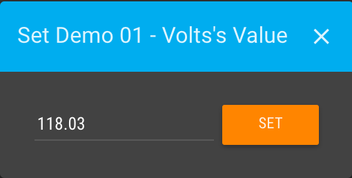
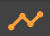

The Watch List page allows you to compare many data points at the same time in a table view. Powerful query and parameter based watchlists can be built using the Watch List Builder, and later viewed on the this page.
On the left side of the Watch List page you can choose between custom Lists,
Devices, or Sources. Choosing a new list will clear the chart and load the new points
contained
within
that list into the table view. Each type of list is explained below:
When viewing Lists, the top option will allow you to create a New watch list and you will be
linked to the Watch List Builder page.
All column names in the Watch List Table can be clicked to sort ascending or
descending by the selected field. Point values will flash with the live value as they update in real-time.
If the viewed list is a List Type Watch List, you can click the edit button to open the Watch List Builder page and edit the configuration for the selected Watch
List.
You can export data from a Watch List by clicking the Download button.
This will open the Download point values popup which gives you options to Download data for
checked points only or Download data for all points on watch list. You can also set
Rollup type and choose to use CSV or JSON for the exported format.
Clicking the chart icon in the row for a point opens a popup to give statistics and latest values for that single data
point over the selected date range in the Header Bar.
The Stats shows statistics related to that data point over the time range.
The Latest Values Chart tab shows a chart with the point’s values either in Realtime
mode or over the selected time range and rollup settings from the Date Bar.
To change these settings check the Configure option and turn on/off the Realtime toggle.
You can set the Number of values to display as well as whether to Show cached data.
The Latest Values Table will show the same values shown on the chart but in a table view.
If a data point is Settable a wrench icon will display on the row that will open a popup dialog you can use
to manually set a data point’s value.
A numeric input will be shown for numeric data points, a drop-down will display for binary and multi-state data points.
To the far right of the row is an icon to linked to the Data Point Details page for that data point.

You can click the checkbox on the far left of each row in the Watch List Table to add a data point to the
Chart and Compare pane.
The date range in the Header Bar controls the time period displayed in the Chart and Compare
pane.
By default a point will be added to the chart using the the left axis and the line color set in the
point’s properties. This can be changed by checking the Configure next point checkbox beneath the chart.
This allows you to set the Line color, Chart type, and Point axis for the next
point added to the chart.
Using the Configure all points/series options you can set these same properties for data points that have
already been added to the chart.
You can also set Axis Color and Stack type for the four available y-axes that data points can
be assigned to. It can be useful to split up data points that will fit into a similar value range on the y-axes of the
chart. Stack type can be used to create filled area charts that stack with the combined values of multiple
data points, or to a 100% Stacked type to show show relative proportions.
Once added to the chart you can also click the Stats tab to view a comparison of
statistics over the selected time range in the Header Bar.
Note that any modifications to which points are checked to display on the chart, as well as chart config options will
need to be saved with the Save button to persist.